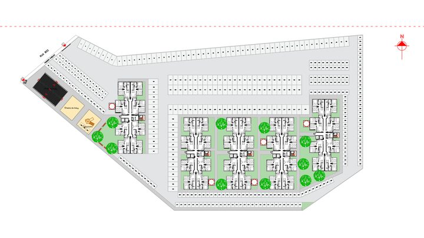
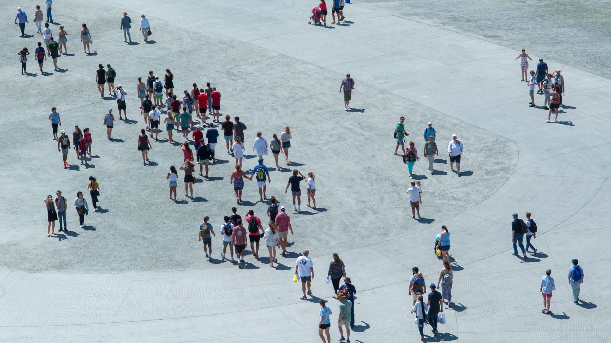

Itapema · HabitaçãoItapema abre concorrência para 1.120 apartamentos e entra com os quatro terrenos
O que uma cidade que cresce rápido precisa construir.
O IBGE estima 214,2 milhões de brasileiros em 1º de julho de 2026. O país cresce 0,37% ao ano, ritmo menor que o do período anterior, mas Santa Catarina sobe 1,54% e fica atrás só de Roraima.
Em 30 segundos · Modo de Leitura, formato original Santa Informa
O Brasil tem 214,2 milhões de pessoas, estima o IBGE.
A data de referência é 1º de julho de 2026.
O crescimento anual caiu para 0,37%.
No período anterior tinha sido 0,39%.
Santa Catarina cresceu 1,54%.
É a segunda maior taxa do país.
Só Roraima cresceu mais, 3,01%.
Mato Grosso vem em seguida, com 1,46%.
A região Sul tem 31,5 milhões de pessoas, 14,7% do total.
A estimativa é o que define o repasse do Fundo de Participação dos Municípios.
Santa CatarinaPublicada em Redação Santa Informa

O Brasil tem 214,2 milhões de pessoas, segundo as Estimativas da População divulgadas pelo IBGE nesta sexta-feira, 28, com data de referência em 1º de julho de 2026. O crescimento anual caiu para 0,37%, abaixo dos 0,39% do período anterior. Os dados foram publicados pela Agência Brasil, em reportagem de Alana Gandra.
Enquanto o país desacelera, Santa Catarina segue puxando. O estado cresceu 1,54% no período, a segunda maior taxa entre os estados brasileiros. À frente, só Roraima, com 3,01%. Logo atrás vem o Mato Grosso, com 1,46%. No outro extremo da tabela aparecem Rio de Janeiro, Alagoas e Rio Grande do Sul, com as menores taxas do país.
O Sudeste concentra 41,6% da população, ou 89 milhões de pessoas. O Nordeste tem 26,8%, com 57,4 milhões. O Sul aparece com 14,7% e 31,5 milhões. O Norte fica com 8,8% e 18,9 milhões, e o Centro-Oeste com 8,1% e 17,4 milhões. Entre os municípios, São Paulo segue na frente, com 11.911.337 habitantes, seguida do Rio de Janeiro, com 6.731.133.
Estimativa de população não é número de enfeite. É com ela que o governo federal calcula o repasse do Fundo de Participação dos Municípios e outras contas de dinheiro público que dependem do tamanho da cidade. Prefeitura que ganha habitante na estimativa costuma ganhar repasse também.
Só que a conta vem com o outro lado. Cidade que cresce rápido precisa de mais sala de aula, mais posto de saúde, mais rede de esgoto e mais coleta de lixo no mesmo prazo, e obra pública demora mais que mudança de caminhão. No litoral catarinense, onde a construção não para e a paisagem muda de uma temporada para outra, é essa a conta que aperta primeiro. Um estado que cresce 1,54% ao ano, mais de quatro vezes a média nacional, sente isso todo ano, não a cada dez.
O resumo de 30 segundos está no topo e a versão completa é o texto acima. Aqui ficam as três leituras da casa sobre o mesmo assunto.
Clara, a otimista
Segundo estado que mais cresce no país, atrás só de Roraima. Gente não muda de endereço à toa: vem atrás de emprego, de segurança e de um lugar bom para criar filho. Santa Catarina está ganhando essa disputa.
E crescer com o país desacelerando é ainda melhor. Enquanto o Brasil sobe 0,37%, aqui sobe 1,54%. Isso é mercado que aumenta, comércio que abre e escola que enche, e o litoral está bem no meio desse movimento.
Seu Prudêncio, o criterioso
Merece atenção a diferença entre as duas taxas. O estado cresce mais de quatro vezes a média nacional, e serviço público não se expande nesse ritmo. Escola, posto de saúde e rede de esgoto levam anos entre o projeto e a entrega. Quem chega, chega no mês seguinte.
Vale acompanhar também o efeito no repasse. A estimativa alimenta o Fundo de Participação dos Municípios, então ganhar habitante melhora a receita, mas melhora depois, e a despesa aparece antes. Uma sugestão útil para quem administra cidade de litoral: usar a estimativa para dimensionar demanda com antecedência, e não só para comemorar o número.
Falta ainda o recorte por município, que é o que interessa de verdade para Itapema e para a Costa Esmeralda. Mas o dado estadual já serve de aviso, e aviso com um ano de antecedência é o tipo de coisa que gestor bom aproveita.
Caco, o sarcástico
O Brasil cresce 0,37% e Santa Catarina, 1,54%. A gente sempre soube que aqui é bom. O problema é que agora todo mundo sabe.
Segundo lugar no país, atrás de Roraima. Perder para Roraima em qualquer outra categoria seria vexame, nessa é quase elogio.
E o melhor de tudo: o número é de 1º de julho. Ou seja, ainda não contaram a temporada.
Fontes: Agência Brasil, reportagem de Alana Gandra publicada em 28 de agosto de 2026 com as Estimativas da População do IBGE, data de referência em 1º de julho de 2026, trazendo os 214,2 milhões de habitantes do Brasil, a taxa de crescimento de 0,37% contra 0,39% do período anterior, a taxa de 1,54% de Santa Catarina como segunda maior do país, os 3,01% de Roraima e os 1,46% do Mato Grosso, as menores taxas em Rio de Janeiro, Alagoas e Rio Grande do Sul, a distribuição regional (Sudeste com 41,6% e 89 milhões, Nordeste com 26,8% e 57,4 milhões, Sul com 14,7% e 31,5 milhões, Norte com 8,8% e 18,9 milhões e Centro-Oeste com 8,1% e 17,4 milhões), os municípios mais populosos São Paulo (11.911.337) e Rio de Janeiro (6.731.133) e o uso das estimativas no cálculo do repasse do Fundo de Participação dos Municípios. A foto que acompanha a reportagem, de Fernando Frazão/Agência Brasil, não foi reproduzida aqui.

Itapema · HabitaçãoO que uma cidade que cresce rápido precisa construir.
 Brasil · Trabalho
Brasil · TrabalhoQuem chega de fora costuma vir atrás de vaga.
 Litoral · Economia
Litoral · EconomiaA outra população que dobra a cidade no verão.